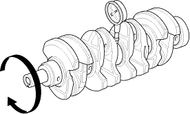
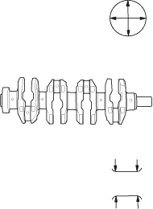

Straightness
- Remove the crankshaft from the engine block (see page 7-13).
- Clean the crankshaft oil passages with pipe cleaners or a suitable brush.
- Check the keyway and thread; repair or replace it if necessary.
- Support the crankshaft with V-blocks.
- Measure runout on all main journals to make sure the crank is not bent. Rotate the crankshaft two complete revolutions. The difference between measurements on each journal must not be more than the service limit.
Crankshaft Total Indicator Runout:
Standard (New):
0.02 mm (0.0008 in.) max.
Service Limit:
0.03 mm (0.0012 in.)


Out-of-Round and Taper
- Measure out-of-round at the middle of each rod and main journal in two places. The difference between measurements on each journal must not be more than the service limit.
Journal Out-of-Round:
Standard (New):
0.005 mm (0.0002 in.) max.
Service Limit:
0.010 mm (0.0004 in.)

- Measure taper at the edge of each rod and main journal. The difference between measurements on each journal must not be more than the service limit.
Journal Taper:
Standard (New):
0.005 mm (0.0002 in.) max.
Service Limit:
0.010 mm (0.0004 in.)